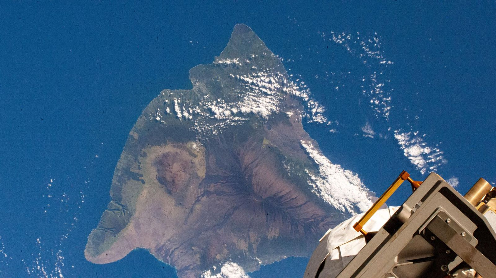
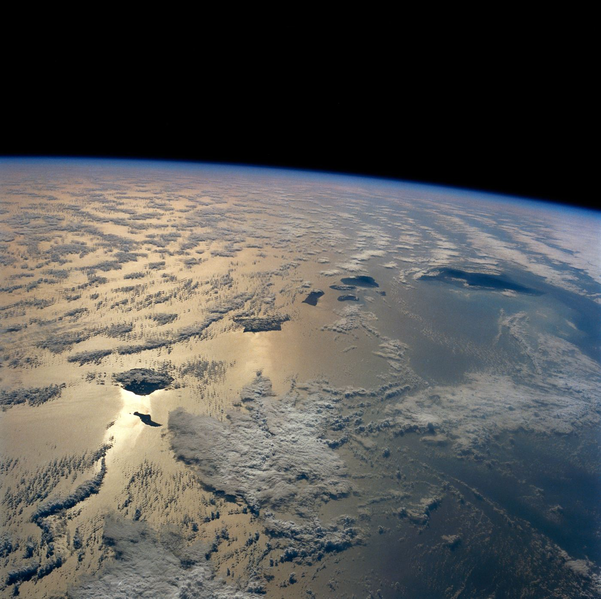
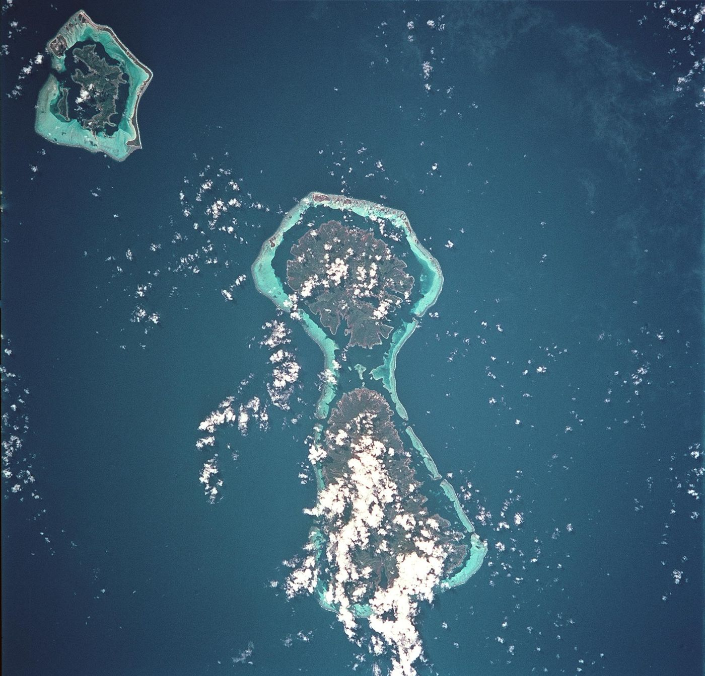
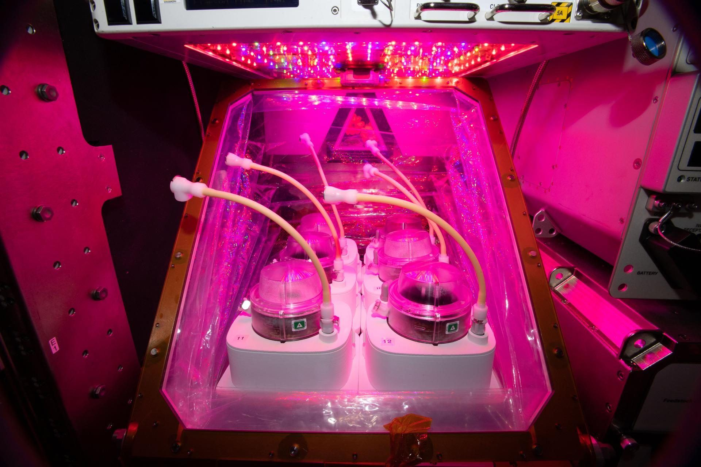

Island budgets
Carbon and nutrient flows across the Hawaiian coast: groundwater, streams, upwelling and dust.
Hawaiʻi Island · ISS · 2024Earth system scientist studying how carbon, nitrogen and phosphorus move through islands, reefs and sealed habitats.

I started on reefs and boats and ended up in statistics. Now I build models of how islands cycle their nutrients.
I studied marine biology and sustainable aquaculture at Unity College, worked on coral restoration in the Florida Keys and marine debris data on Oʻahu, then earned an M.A. in data science at Harvard.
Today I'm a PhD student in Environmental Sciences at Oregon State University, working with Dr. Carolyn Fonyo. I teach environmental statistics online at Unity Environmental University and run Terra Laboratories in San Diego. When I'm not at a keyboard, I'm usually on the water.
Nutrients come in, get cycled by the living community, and leave. I measure those budgets on islands, where data are rich, and apply them to closed habitats and space systems, where data are scarce.

Carbon and nutrient flows across the Hawaiian coast: groundwater, streams, upwelling and dust.
Hawaiʻi Island · ISS · 2024
How reef communities hold on to what arrives, and how much they recycle.
Society Islands · STS-93 · 1999
The same budget math applied to bioregenerative life support, where almost nothing crosses the boundary.
Veggie chamber · ISS · 2020X Stocks of carbon, nitrogen and phosphorus
P, R Production and respiration by the community
Φ Flows across the boundary, large on islands and near zero in sealed habitats
Atmospheric CO2 at Mauna Loa rose from 316 ppm in 1959 to 427 ppm in 2025. It is the longest continuous CO2 record on Earth, and it comes from the islands I study. The yearly zigzag is Northern Hemisphere plants drawing CO2 down each summer.
Monthly mean CO2 (grey) and seasonally adjusted series (teal). Data: NOAA Global Monitoring Laboratory; 1958 to April 1974 from C. D. Keeling, Scripps Institution of Oceanography. Dec 2022 to Jul 2023 measured on Maunakea during the Mauna Loa eruption.
New posts appear here automatically once they are published. Plain-language explainers for each paper, methods notes, and longer pieces on islands, element cycles and closed systems.
I study how carbon, nitrogen and phosphorus cycle through bounded biogeochemical systems, where a living community's element budget depends on exchange across a defined boundary.
My dissertation develops a hierarchical Bayesian state-space framework that fuses satellite remote sensing and public monitoring data to estimate community function and boundary fluxes with explicit uncertainty, validated across the Hawaiian Archipelago. I carry the same framework into closed and bioregenerative life support systems, and more broadly into the ecology and infrastructure needed for long-duration human presence in space.
Collaborations, data, speaking, or a question about my work. Email is the fastest way to reach me.
souzacam@oregonstate.edu